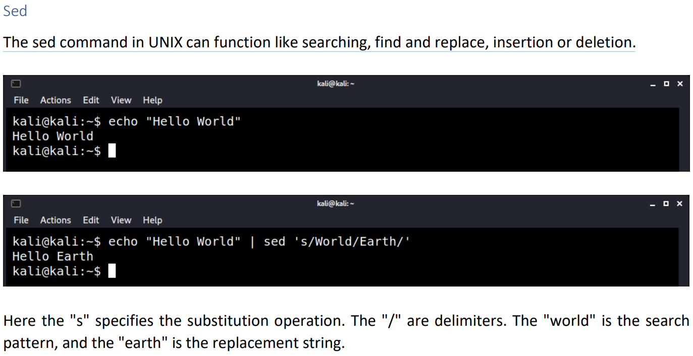

find a specific line by line number:
cat <file> | sed 'NUMq;d' eg for line 112: cat <file> | sed '112q;d'
delete empty lines (only lines without spaces):
sed '/^$/d' file.txt
d is the sed command to delete a line. ^$ is a regular expression matching only a blank line, a line start followed by a line end.
delete empty lines including lines with spaces
sed '/^ *$/d' file.txt
-i flag make changes to the file
